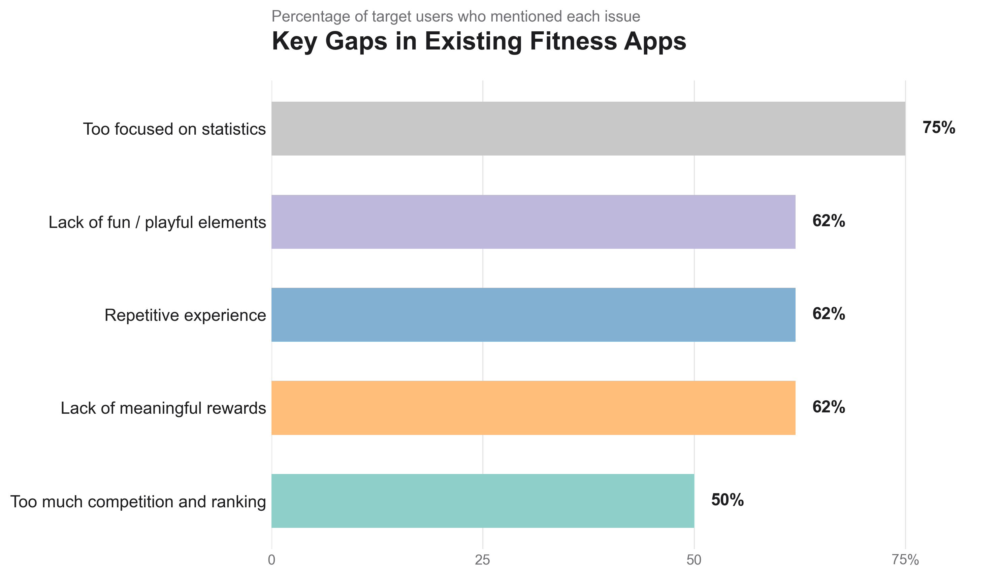
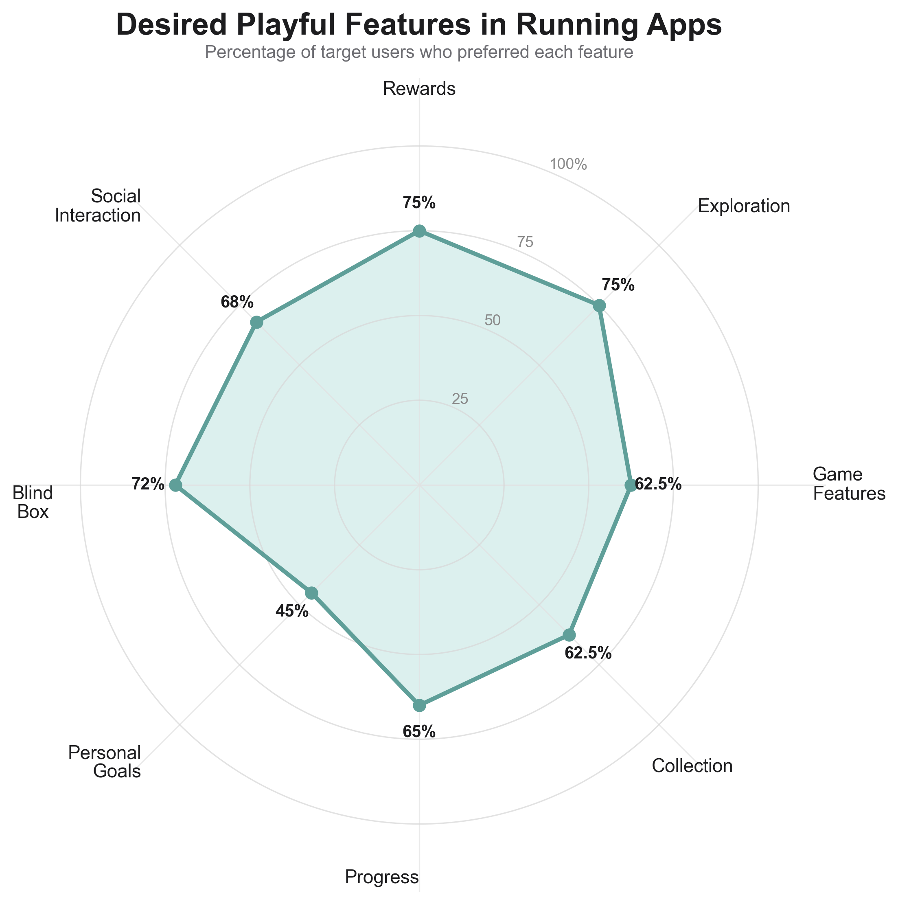

Research & The Gap
Positioning MileScape between academic research and existing commercial products
Market Analysis
Common Products in the Market
Existing running and fitness applications such as Keep, Nike Run Club, Strava, and Apple Fitness focus heavily on performance tracking and structured training.

Example: Keep 45%
Market Issues (Runner Perspective)

Problem Identification
Our group survey revealed that most existing running applications focus excessively on data—such as mileage and calories—while lacking fun and engaging elements.
Many users reported that these systems fail to provide fresh experiences or meaningful rewards, making it difficult to sustain long-term motivation.
Approximately half of the users mentioned that competitive ranking systems introduce stress rather than enjoyment.
Although social features can increase engagement, they often require continuous coordination by organizers and may not suit all users.

User Requirements
To identify effective incentives, we examined users’ interests beyond running, including gaming and travel.
Users showed strong interest in exploration and collection mechanisms, such as unlocking items and discovering new places.
Therefore, MileScape integrates these two core elements to create a more engaging running experience.
Although blind-box mechanics were considered, they were ultimately rejected due to the difficulty of delivering meaningful surprise and value in a digital environment.
Organizer Insights
Although organizers represent only 13% of users, they strongly influence participation.
They reported that:
• Runner motivation declines quickly after initial enthusiasm
• Existing apps struggle to retain users
• Group coordination is time-consuming and difficult
These findings suggest the need for systems that reduce reliance on organizers while supporting intrinsic motivation.
Identified Gap
Current running apps focus on data tracking and competition, while lacking engagement, fun, and emotional rewards.
There is a clear gap between user expectations and existing solutions.
→ MileScape addresses this gap by combining exploration, collection, and emotional engagement into a unified running experience.